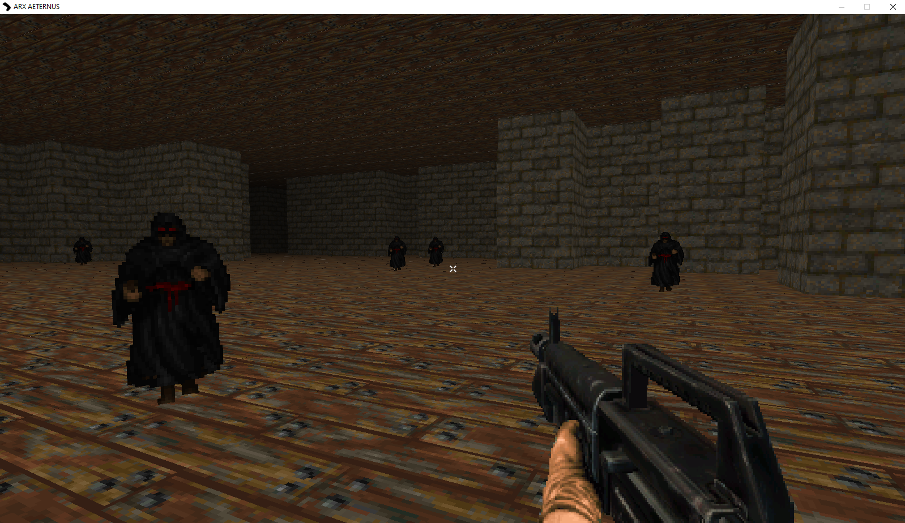
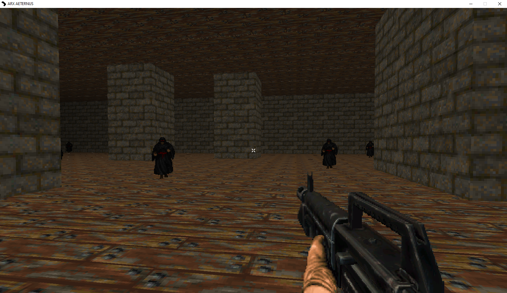
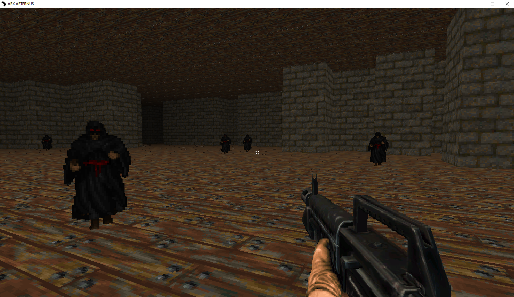
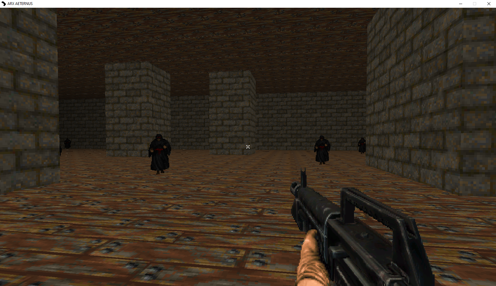
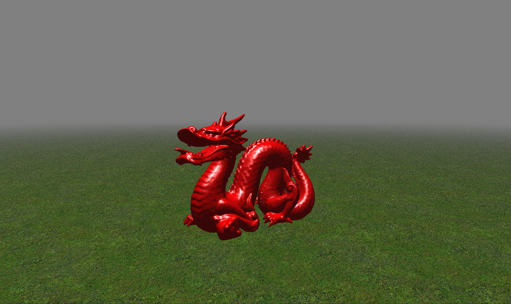

Arx Aeternus OpenGL Game (aka Rapture, aka Project Machina)
3D game written with OpenGL and Java inspired by retro FPS games like Doom and Hexen.
[W][A][S][D] to move, [SPACE] to jump, [LMB] to shoot.
Download
Arx Aeternus 0.1
Features currently implemented in the source code:
- Collision through Pixel-perfect Axis-Aligned Bounding Box
- Chunk-loading (loading revelant chunks of a level instead of the entire level)
- Random level generation
- Save and Load level files
- Scenes and Entities
- GUI

 



History
This game is built off of a heavily modified version of my game engine that I wrote in 2019: Ajax-Engine
Features removed from my old engine:
- .OBJ model loading
- Scene Editor
Screenshot of my old engine:

Originally, I wanted to create a 3D adaptation of the rogue-like "Cataclysm: Dark Days Ahead". Once I've modified my engine to use a voxel system (like Minecraft) I decided that I wanted to create a retro First Person Shooter game similar to Doom. These are the screenshots and demo of my "Minecraft clone" that this game evolved from.
Early Demo (Rapture) Download
Download

I want to rewrite this game/engine in C++ sometime in the future.